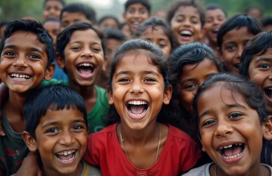
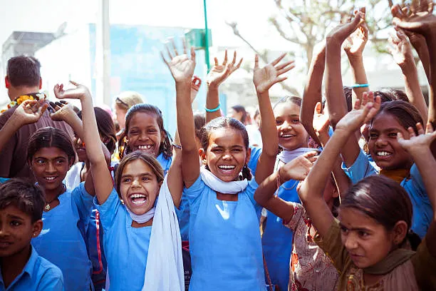
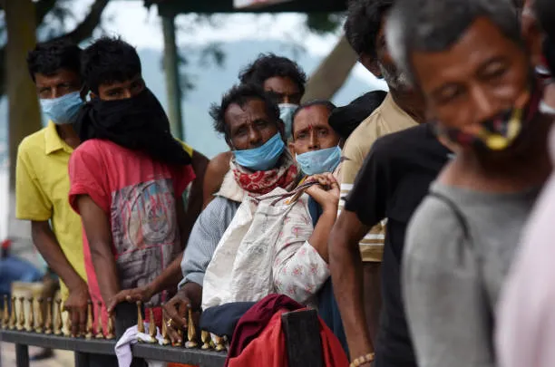
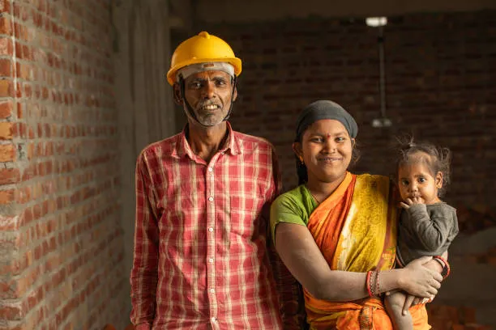
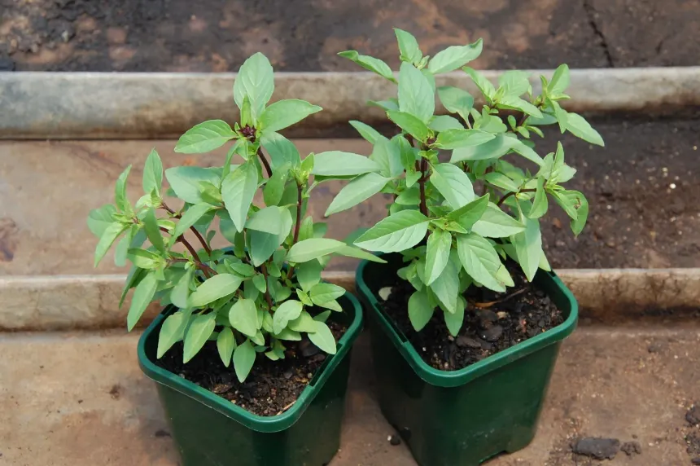
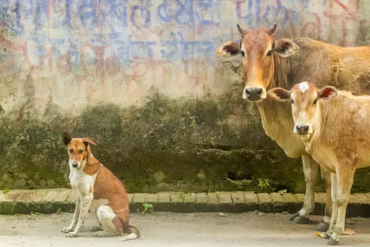

Project Seva
Food and clothingDistributes meals and clothes to people living in poverty, so that hunger does not decide who gets to live with dignity.
InAmigos Foundation is a non-profit from Chhattisgarh working to feed the hungry, educate children, protect animals, empower women, heal the environment and build skills for young people.






InAmigos Foundation is a Section 8 non-profit organisation based in Bilaspur, Chhattisgarh, India. It was founded in 2020 to step in where society often looks away: hunger, lack of schooling, animals left without care, and women without opportunities.
The foundation runs on the work of volunteers and supporters. Anyone can take part by donating, volunteering their time or simply spreading the word.
Each project is named in Hindi and tackles one clear problem in the community.
Distributes meals and clothes to people living in poverty, so that hunger does not decide who gets to live with dignity.
Brings quality education to underprivileged children so that no child has to choose between school and survival.
Rescues, protects and feeds stray animals who cannot speak for themselves.
Gives women skills, resources and entrepreneurial support to lead independent lives.
Promotes a cleaner, greener future through tree plantation drives and sustainability awareness.
Builds employability for youth and adults through practical skill-development programmes.
Moments from our drives, events and community work. All photos are from the official InAmigos Foundation gallery.


Every project is aimed at a lasting change in people’s lives, not a one-time act of charity.
Whether you give an hour, a donation or a share on social media, you help turn compassion into action.